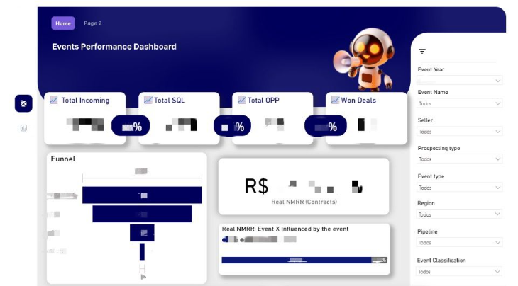
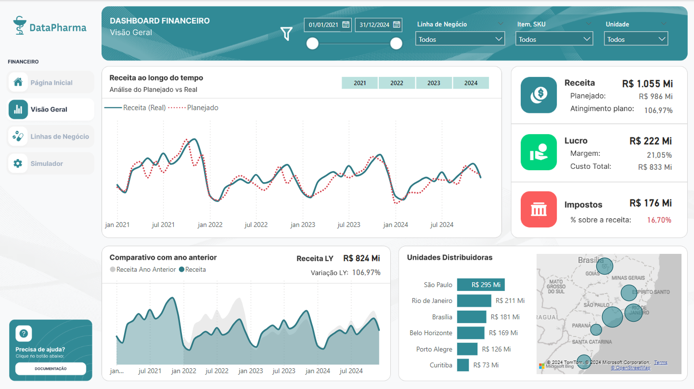
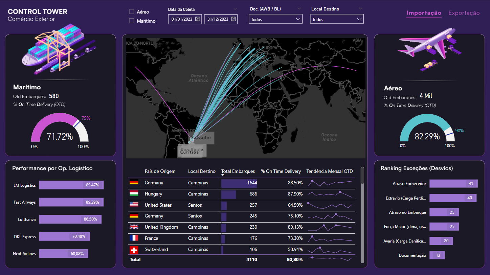
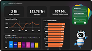
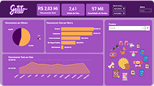
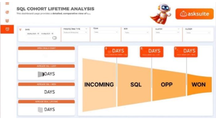
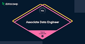

Hello! My name is
GTM Engineer · AI Automation · DataOps
"I build the systems behind GTM — automations that run, pipelines that self-correct, and data that actually drives revenue."
Analytics Engineer at Asksuite — a global B2B SaaS platform for the hospitality sector. I specialize in the intersection of data engineering, AI automation, and GTM systems: building pipelines that replace manual work, agentic workflows that improve themselves, and revenue intelligence that changes how teams make decisions. I work across Latin America, North America, and Europe.
View Projects Dashboard Portfolio Contact MeTech Stack
End-to-end pipeline design, from ingestion to delivery. SCD Type 2, Star Schema, ETL/ELT.
Self-service dashboards with correct historical modeling and revenue-focused metrics.
Agentic pipelines with closed feedback loops. Systems that audit and improve themselves.
Multi-cloud data infrastructure for scalable ingestion, storage, and transformation.
GTM automation, funnel modeling, and pipeline analytics across international markets.
Engineering & Automation
N8N · Claude · Slack API · Google Sheets
Eliminated a 5-day manual churn classification process and replaced it with a self-improving monthly pipeline. A Classifier Agent (N8N) reads diagnostic data and maps churn drivers automatically. An AI Judge (Claude) reviews outputs and auto-corrects inconsistencies before delivery to Slack every last day of the month.
The audit module via Claude Code calculates classification accuracy, surfaces errors, and generates a training spreadsheet — the system gets smarter with every cycle without human intervention.
Clay AI · N8N · BigQuery · Google Sheets
Proposed and implemented Clay AI for the GTM stack. Built an end-to-end outbound workflow that cut the demand generation cycle from 7 days to 1 day. Automated lead scoring and enrichment pipeline pulling firmographic and behavioral data into the CRM.
Implemented data governance standards across 600K+ rows, improving quality for global GTM teams. Dashboard adoption increased 80% after the data quality revamp.
BigQuery · Power BI · SQL · DAX
Event performance was measured in attendance and reach — with no connection to financial return. Built an end-to-end funnel from attendance to pipeline to closed revenue, with payback modeling (time-to-recover-investment) for each event type and market.
Changed the internal conversation from surface-level engagement to sustainability and return — enabling better budget allocation across international markets.
Claude Agents · Pipedrive · Data Quality · Automation
Designed a multi-agent Claude workflow to clean the Pipedrive CRM at scale. Specialized agents detect likely duplicates, compare records across key fields (name, domain, email, owner, activity history), and decide which record survives and what gets merged — logging the reasoning behind every decision.
Removed 2,000+ duplicate records with zero lost activity history. Cleaner account and contact counts, and reporting the team can trust.
Case Studies
Teams had to open three or four separate Power BI dashboards to see their own KPIs. Power BI was great for analysis, but it couldn't write back to the CRM, send alerts, or adapt to how each team worked.
No single view per team, and no way to act on the data from the screen where it was shown. The people who needed it were non-technical managers, not analysts.
Replaced the dashboards with internal data hubs built with Lovable on top of a BigQuery data layer: one place per team for the onboarding funnel, late-onboarding follow-up, channels, and team productivity, plus a Data FAQ explaining the logic behind every KPI. Data modeling stayed in the warehouse, and AI handled only the application layer. Access is secured with company-email login, and some hubs include an AI assistant so managers can ask questions about their own data.
There was no systematic process for churn classification. Every month, someone spent 5 days manually reading diagnostic data, interpreting it subjectively, and consolidating the results. The process was inconsistent between cycles and never improved.
Classifying churn drivers required human reading of raw diagnostic data, subjective interpretation, and error-prone manual consolidation. Reports arrived too late to be actionable, and accuracy didn't compound over time.
An agentic pipeline in N8N with two AI agents: a Classifier that reads diagnostic data and maps churn drivers automatically, and an AI Judge (Claude) that reviews outputs, detects inconsistencies, and auto-corrects before delivery to Slack on the last day of every month. A separate audit module via Claude Code calculates classification accuracy each cycle, surfaces errors, and generates a training spreadsheet — the system gets measurably smarter with every run, without human intervention.
The GTM team operated in a highly specific niche — traditional enrichment tools like Apollo failed to find quality contacts. The prospect list existed (companies), but finding the right person inside each company was a manual, low-yield process.
Standard enrichers couldn't navigate the niche. Finding contacts required manual research per company, with inconsistent results and no scalability. The ICP was well-defined but impossible to execute at volume.
An AI agent running Claude inside Clay that iterates over a company leads spreadsheet and autonomously scrapes reliable web sources to find contacts matching a pre-defined ICP (role, seniority, department). Each contact exits with phone, email, and LinkedIn profile. Clay feeds that data into an N8N workflow that generates a personalized briefing for each contact and triggers a custom outbound email cadence — personalised by what was found about the person, not just their title.
The demand generation cycle took 7 days end-to-end and depended on manual enrichment, scoring, and qualification. CRM data had no governance — 600K+ rows with inconsistent quality across three global markets. Clay AI didn't exist in the stack; it had to be proposed, justified, and implemented from scratch.
The GTM team couldn't scale outbound because lead pipelines were slow and data quality was unreliable. Without clean, enriched data, both scoring and personalization were guesswork.
Proposed and implemented Clay AI as the enrichment layer for the GTM stack. Built an end-to-end outbound workflow that automates lead scoring and enrichment — pulling firmographic and behavioral signals directly into the CRM. Implemented data governance standards across 600K+ rows to establish quality baselines for global teams.
The company ran events across multiple markets (Latin America, North America, Europe) with no financial return visibility. Performance was measured in attendance and reach — metrics that had no connection to pipeline or revenue.
There was no way to know which events generated real pipeline, which had positive payback, and which were consuming budget without return. Budget allocation was based on intuition and attendance numbers, not financial sustainability.
An end-to-end funnel model from event attendance through to closed revenue, with payback modeling (time-to-recover-investment) calculated per event type and per market. A single source of truth that lets Product and Business teams answer one question: is this event actually worth running again? Shifted the internal conversation from reach to return.
BI Portfolio

Most dashboards show what happened. Few show whether it was worth it. Built to answer one question: are our initiatives actually paying off? End-to-end funnel from attendance to closed revenue, payback modeling per event type and market, and a single source of truth for Product and Business teams. Shifted the conversation from "How many users attended?" to "Which events are truly sustainable?"

Track cash flow over time, calculate profit margin (%), analyze expenses by category, and measure the representativeness of costs by department.

Conduct logistics network analysis (network design) with metrics to control freight costs, evaluate transportation performance, and identify the most frequently used vehicle types in operations.

Interactive dashboard for monitoring and analyzing cybersecurity threats, vulnerabilities, and security metrics in real-time.

Comprehensive analytics solution for petshop business intelligence, featuring sales trends, customer behavior, and inventory management.

This dashboard tells you how fast deals moving — and where they get stuck. Built around time intelligence: deal velocity by funnel stage (prospecting → qualification → proposal → close), cohort analysis by deal start date, and bottleneck identification across stale deals. Shifted the conversation from "How many deals do we have?" to "Where in the funnel are we losing momentum?"
Principles
Data without business context doesn't generate decisions — it generates confusion. Every model I build starts with: what will someone actually do with this?
Real automation includes the feedback loop — a pipeline that runs but never improves is just deferred manual work. I build systems that audit themselves.
Historical accuracy is not optional — if your data model doesn't handle organizational changes correctly, your metrics are lying to you.
Frameworks fail without context — RevOps playbooks, data mesh principles, agile sprints: all useful, all wrong when applied without understanding the specific business reality.
Get in Touch
Open to conversations about analytics engineering, Revenue Ops, agentic AI systems, and international GTM data strategy.
Certifications

Associate Data Engineer — Datacamp